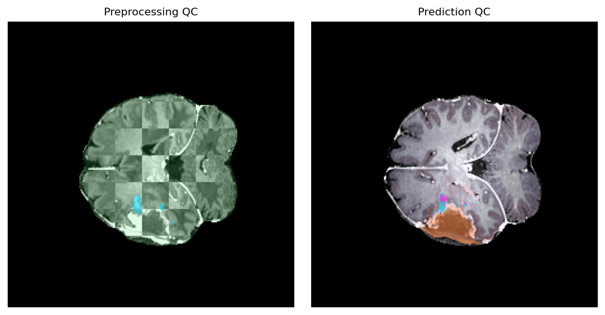

UCSD-PTGBM Real-Data QC Example
Static QC pages generated from one public UCSD-PTGBM case, using a neutral committed case ID. The reports show the pipeline outputs: baseline MRI, brain and tumor masks, mapped recurrence label, and voxelwise recurrence-risk overlay.

Preprocessing QC
T1c/FLAIR alignment, brain mask, baseline tumor mask, and quality flags.
Prediction QC
Baseline anatomy, recurrence label, tumor mask, and recurrence-risk heatmap.
Summary JSON
Machine-readable case summary for the linked prediction QC report.
Research documentation only. This is not a clinical-use output, treatment recommendation, dose recommendation, boost-region selection, or patient-management tool.